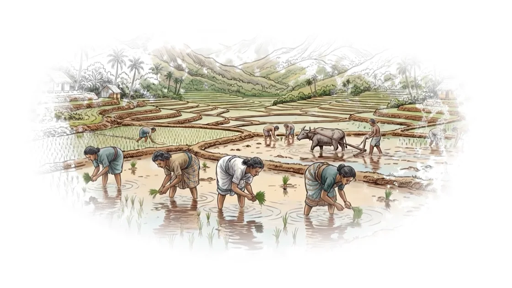
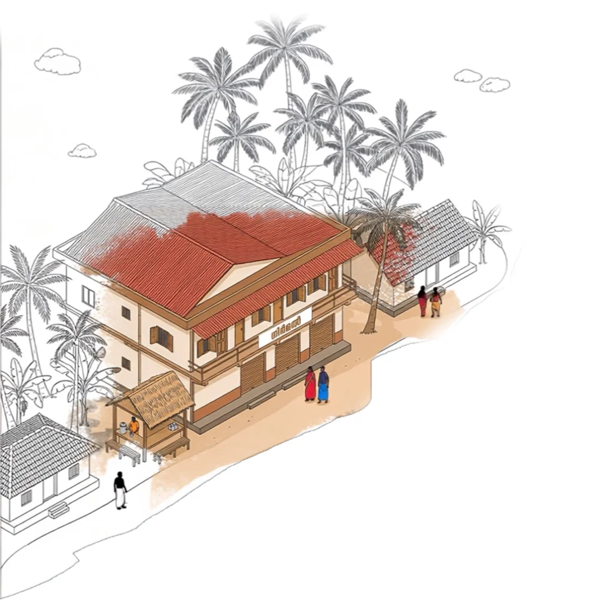
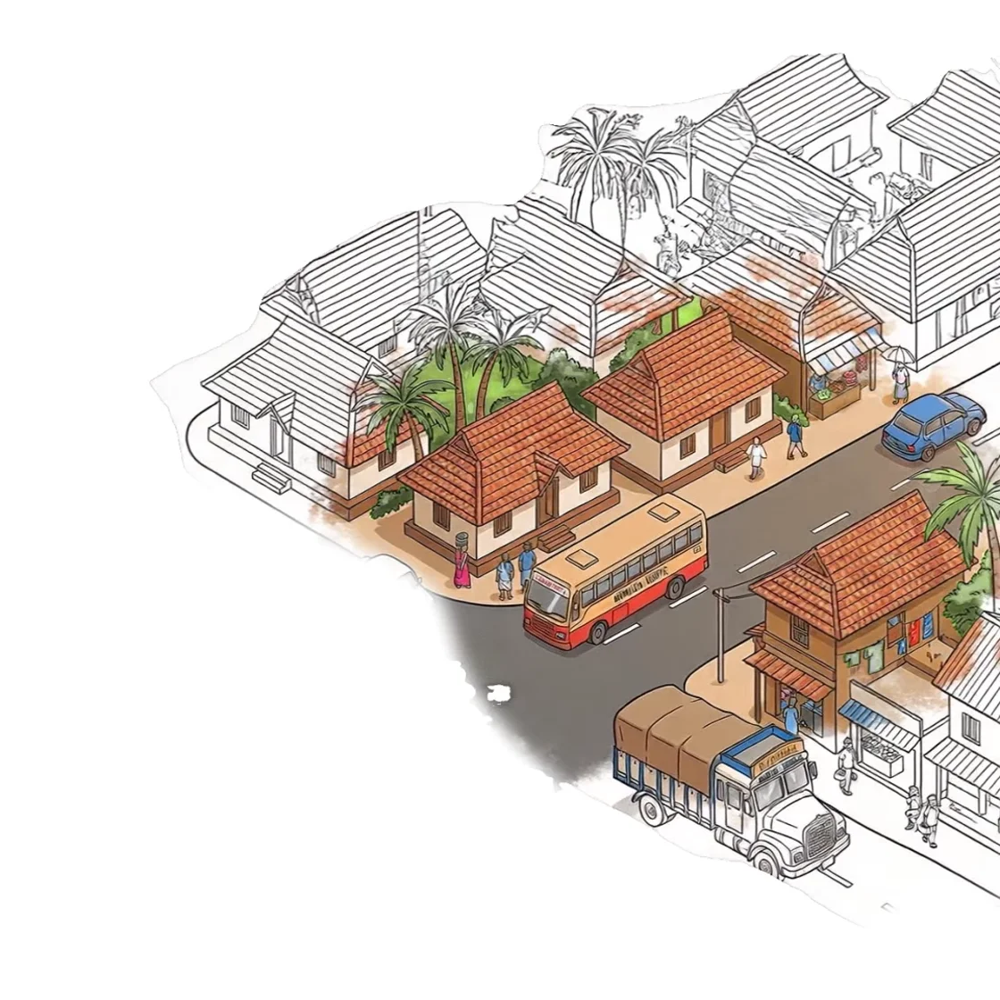
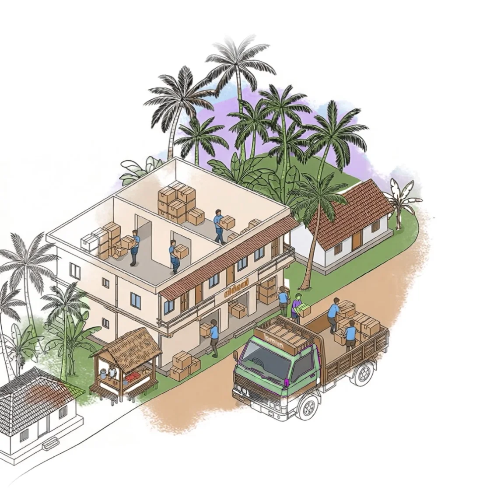
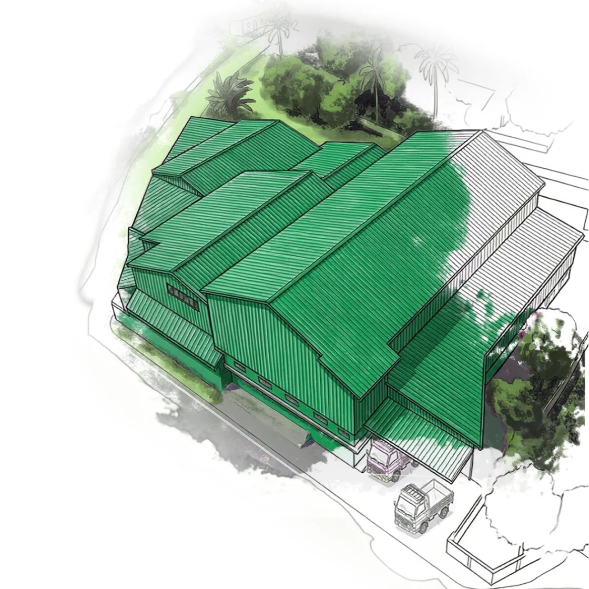
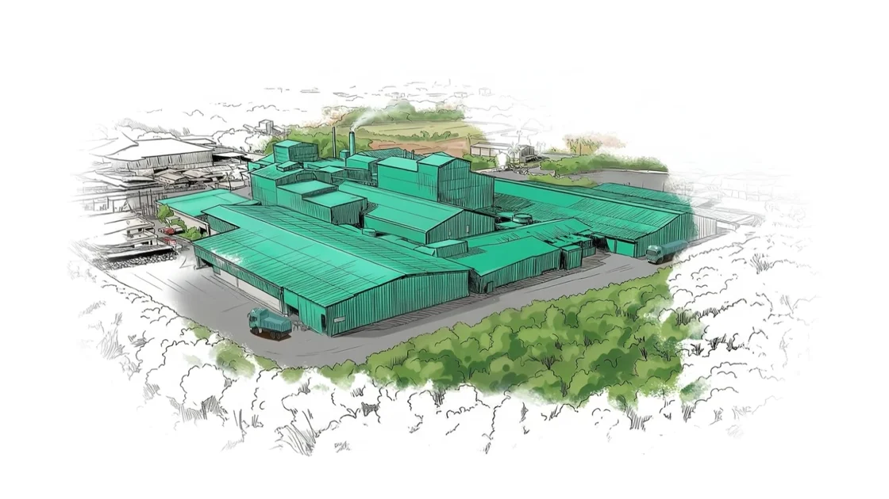

ROOTED IN KERALA. GROWING WITH CARE.
A legacy, carried forward
Before anything grew, there was a beginning.
Not defined by scale. Not measured in numbers.

To build with care.
To earn trust,
one step at a time.
To move with discipline.
Just a clear intention. To do things the right way.

01 / THE FOUNDATION
1998 — Where it
all began
Keerthi Agro Mills was established with clarity and purpose. Not to grow fast, but to grow right.
A system was built to control quality and deliver consistency every single day.
The early years were about understanding the land, the process, and the responsibility.
Because what is built carefully lasts.

02 / REACHING PEOPLE
2005 — The journey
moves forward
As demand grew, the journey had to reach people. Our first distribution network was created.
- Routes
- 20
- Vehicles
- 2
Small, but deliberate. With reach came responsibility: to ensure what left the mill arrived with the same standard.
A little further. With the same care.

03 / GROWING TOGETHER
2010 — Strength
behind growth
The system expanded. Behind every number were people, effort, and a shared belief in doing things well.
- Routes
- 30
- Vehicles
- 12
- People
- 273
Operations strengthened. A structure took shape that could support growth without losing discipline.
Step by step. Layer by layer.

04 / A WIDER HORIZON
2020 — Scale begins
to take form
The network expanded. Production increased. What started small was now moving across regions.
- Routes
- 120
- Vehicles
- 104
- People
- 480
To grow without losing discipline. To expand without diluting quality.
Growth was never the goal. Consistency was.
05 / THE NEXT CHAPTER
2025 — The scale of a legacy
A bigger world. The same promise.

Today, the Keerthi Nirmal legacy stands stronger than ever. A trusted Kerala rice brand. A growing FMCG company. A presence extending beyond borders.
- Distribution routes across Kerala
- 235 routes
- Delivering goodness, every day
- 245 vehicles
- One shared commitment
- 1,100 people
Yet, the foundation remains unchanged.
The way we choose. The way we process. The way we deliver.
What we carry forward is a system of trust.
From one grain to millions of homes.
It still begins with a single grain.
Keerthi Nirmal
Delivering happiness